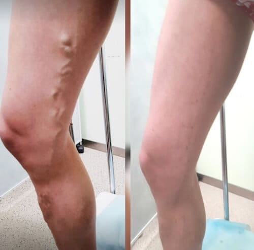
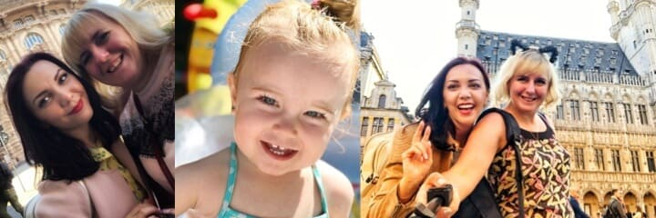
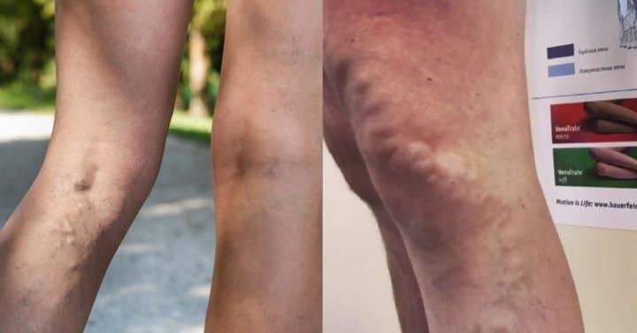
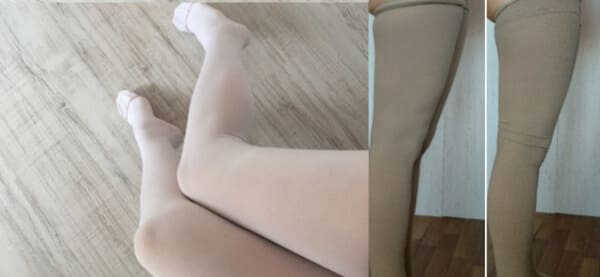
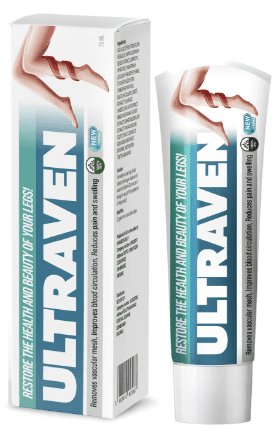
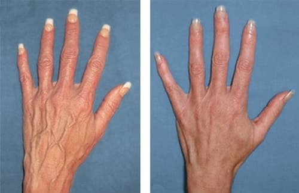
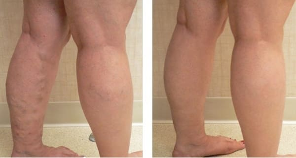

JAK JSEM SE ZBAVILA KŘEČOVÝCH ŽIL ZA 4 TÝDNY
Aktualizováno Návštěvníků: 2,5 tisíce
Ahoj všichni! Prozradím vám tajemství: za poslední měsíc jsem vrátila svým nohám zdraví a krásu! Chci se s vámi podělit o své velké vítězství... podařilo se mi zbavit křečových žil! Sdílím s vámi svou metodu. A bude skvělé, pokud necháte zpětnou vazbu pod tímto článkem, pokud tento preparát také znáte! Dobře?

Stala jsem se matkou před dvěma lety. Po porodu se mi na nohou objevily strašidelné modré žíly. Vzpomínám si, jak tehdy moje matka si povzdechla: `Je ti teprve 33 let a ty už máš křečové žíly. Je mi 54 let a žíly na nohou jsou v pořádku...` Jo, moje máma rozhodně není choulostivá. Co dělat, když je její genetika lepší nebo možná má jen štěstí. A mě příroda nešetřila :(( a těhotenství vyvolalo křečové žíly.

Křečové žíly jsou nejen ošklivé, ale také velmi bolestivé. Nohy se mi staly těžké a oteklé, nemohla jsem dlouho stát, pořád se mi chtělo sednout nebo si lehnout, abych z nohou odstranila zátěž, trochu si protáhla nohy, odpočinula si... Takže moji rodiče a babička museli často chodit ven s dcerou místo mě. Bolavé nohy mě vyčerpaly, takže jsem následovala radu lékaře a podstoupila operaci. Dopadlo to dobře, ulevilo se mi, jediné co mi vadilo, že modřiny po operaci se dlouho hojily. Po pár měsících jsem se rozhodla, že jsem v pořádku, a šla jsem do posilovny. Necítila jsem žádnou bolest nebo nepohodlí, ale ani ne o půl roku po operaci, co se nemoc vrátila!

Pamatuju si, jak jsem dělala dřepy. Ohnula jsem nohy v klíně, pak jsem vstala (ne moc rachle) a v očích se mi udělalo šeru, zakroutila se mi hlava, v uších bylo strašidelné zvonění. Byla jsem velmi vyděšená, okamžitě jsem zavolala taxi a odjela na soukromou kliniku k lékaři. Doktor se mě ptal, co mě trápí, a já mu nevěděla. Abych byla diagnostikována, musela jsem být vyšetřena: nejprve jsem odevzdala krev. Pak jsem zavolala manželovi a on také přišel na kliniku.
Když mě doktor začal vyšetřovat, všimla jsem si, že žíla pod kolenem na pravé noze se stala tlustší než palec! Byla oteklá a pulzovala. A na levé noze se žíly také silně nafoukly a staly se jasně modrými!! Křečové žíly jsou zpět! A co mi podle vás nabídl doktor? Správně - operace. Ale moje důvěra v operace už zmizela, tak jsem se zeptala na alternativní možnosti léčby, a bylo mi doporučeno pít pilulky. I když to není tak efektivní, přesto jsem si je vybrala. Nechtěla jsem totiž znovu chodit v modřínech a pořád se bát recidivy...
Užívala jsem předepsané pilulky týden. Bolest ustoupila, ale žíly byly stále tak velké a ošklivé. Nemohla jsem se dívat na nohy bez slz. A litovala jsem, že jsem nesouhlasila s další operaci.
Bylo mi doporučeno nosit kompresní prádlo. Je to hrozné: nepohodlné, neatraktivní a vůbec pochybuji, že je to užitečné. Komprese je slabá na látkách a velmi silná pod koleny. Punčochy tvoří drážky. Brázda pod kolenem bolestivě sevře nohu. Punčochy se roztahují a roztrhají v pase a jsou drahé. A jaký z nich mám užitek? Vždyť já jsem chtěla tento problém vyřešit úplně, ne ho skrývat pod oblečením.

Na fotografii (vlevo) - ve skutečnosti (vpravo)
Lékaři mě ujišťovali, že operace odstraní křečové žíly jednou provždy. Ale jsem opět v nemocnici se stejným problémem! Co mi o tom teď můžete říct? Křečové žíly se vrátily a zhoršily se.
Celou noc jsem nespala, protože jsem četla různá fóra, kde jiné ženy psaly o nesprávné léčbě křečových žil a strašlivých následcích operací. (nejsem v tom sama!). Už toho mám dost. Už jsem dost vyděšená. Soudě podle toho, co píší, pokud se nezbavím problémů za rok nebo dva, pak už nikdy neuvidím své nohy zdravé!
Přesto jsem nemohla přestat číst. Ať už jsem dělala cokoliv, dalo jen dočasnou úlevu, nebo nepomohl vůbec: masáž, kontrastní sprcha, venotonika, atd někdy bolest byla menší, ale požadované zlepšení nepřišlo. Proto jsem pokračovala v hledání všech možných informací o křečových žilách a způsobech léčby.
Jednoho dne, uprostřed obvyklých drbech a stížností, jsem uviděla odkaz na lékařské fórum. Rozhodla jsem se tam napsat. Tehdy jsem ani netušila, že to je můj klíč k záchraně! Našla jsem účinný způsob, jak se zbavit křečových žil!!!

JAK SE MŮŽETE ZBAVIT KŘEČOVÝCH ŽIL NAJEDNOU PROVŽDY ??!
Položila jsem svou otázku na tomto fóru. Odpověděli mi tři lékaři. Jeden doporučil operaci (znovu? jsou za to placeni?!), další mi doporučil další venotonickou terapii (ale polovinu z toho, co doporučil, jsem již vyzkoušela). Ale třetí varianta mě zaujala. Alespoň to bylo něco zcela nového! Bylo mi nabídnuto použít nový pro Evropu preparát - gel Šla jsem na web, který mi dal lékař a podrobně jsem zkoumala tento preparát. Všechny složky jsou přírodní, spousta dobrých recenzí a doporučení flebologů. Gel prošel klinickými testy a je certifikován v EU. Podle toho, co jsme přečetla, je to docela efektivní a naprosto bezpečné preparát.
V každém případě jsem neměla co ztratit a nemohla jsem už čekat. Co mě čeká v budoucnu, když křečové žíly budou ještě závažnější? Nové operace? Nebo invalidní vozík? Zkrátka, dlouho jsem nepřemýšlela, a rozhodla se, že je třeba objednat a osobně ověřit jeho účinnost. Ale předtím jsem ještě konzultovala s odborníkem na klinice. Když lékař slyšel název preparátu, souhlasně přikývl a podpořil mou volbu tím, že řekl, že tento nástroj vyřeší můj problém asi za měsíc. Na otázku: proč mi tento gel předtím nedoporučil, lékař odpověděl, že většina pacientů se rozhoduje pro operaci kvůli rychlému výsledku... se navíc v Čechách objevil teprve nedávno a ještě málo lidí to stihlo vyzkoušet. Takže se drží tradičních metod léčby křečových žil, ačkoli tento preparát má významné výhody oproti operaci - je vhodný pro všechny, protože nemá žádné kontraindikace, má dlouhodobý účinek, atd. eliminuje křečové žíly JEDNOU PROVŽDY! No, tak jsem si objednala a jakmile jsem dostala svou objednávku, hned jsem ho začala využívat. Upřímně řečeno, byla jsem dost skeptická...
Jaké byly výsledky? Zda zmizely křečové žíly?
Po 2-3 dnech zmizely bolesti nohou a křeče. Kapilární pavučina pod kolenem začala mizet, stejně jako oteklé modré žíly, kvůli kterým jsem nemohla nosit krátké sukně a šortky, otevřené boty. Nejprve se nemocné žíly stály méně nápadné, ale přibližně po 27-30 dnech zcela zmizely.
Nemohla jsem uvěřit těmto změnám, zejména tomu, že nastaly tak rychle. Prošla jsem sonografií (duplexní vyšetření žil a tepen). Jedná se o speciální vysoce přesnou ultrazvukovou diagnostiku a ukázala, že povrchní a hluboký žilní systém mých nohou je v pořádku! Stěny žil se zpevnily, normální krevní oběh byl obnoven. A spravedlnost taky! :)
Díky gelu
- Křečové žíly zmizely!
- Už necítím tíhu a únavu v nohách;
- Krevní oběh se zlepšil a žíly se zpevnily;
- Konečně si zase můžu vzít sukni nebo minišaty. Protože moje nohy jsou opět zdravé a krásné! :)
Samozřejmě, léčba netrvá hodinu ani týden, potřebuje čas, aby gel začal působit a pomáhat. Ale my jsme dospělí lidé a musíme si uvědomit, že výsledek nepřichází okamžitě. Použila jsem gel denně podle pokynů - malaze jsem gel na nohy ráno a večer po dobu 28-30 dní. Ano, téměř celý měsíc. ALE STOJÍ TO ZA TO! Cítím se teď skvěle a už nemám žádné problémy s nohama: žádná bolest a nepohodlí a nohy vypadají esteticky atraktivní! Je to moje vítězství! : Už jsou to 3 měsíce, chodím znovu do posilovny - a žádný problém! Kůže je stále rovná bez nepříjemných změn. To znamená že žíly jsou v naprostém pořádku! A co je pro mě nejdůležitější, že díky tomuto preparátu jsem se zbavila nejen křečových žil, ale i dalších komplikací tohoto onemocnění - rizika trombózy a vředů.
Ze všech metod, které jsem vyzkoušela, jen dokázal znovu udělat nohy zdravé a krásné.
Pro všechny zájemce jsem si gel objednal pomocí odkazu, který jsem nechala dole. Toto je jediná možnost, jak získat tento preparát, protože není k dispozici v lékárnách. Na tomto webu se prodává originální certifikovaný produkt , který mi pomohl zbavit se křečových žil! Platíte za objednávku, když ji obdržíte, takže je vše bezpečné!
A mimochodem, nyní tento gel si můžete koupit s 50% slevou, je to speciální nabídka, kterou provádí výrobce pro popularizaci produktu. Podle mého názoru je to skutečný dárek pro zákazníky, vzhledem k účinnosti tohoto produktu! Prosím, pokud někdo již vyzkoušel , nechte svůj názor. To je pro mě zajímavé a pomůže ostatním čtenářům mého blogu vyřešit svůj problém s křečovými žilkami.
NÁZORY:
Lenka
Křečové žíly jsou pro nás ženy něco hrozného. Jsem ráda, že ses tak rychle zbavila ošklivých žil na nohou. Teď je řada na mně, doufám, že mi také pomůže!
Pavlína Posejpalová
Lenko, bez pochyby! Díky za důvěru.
Tereza
Přiznám se, že slyším poprvé o tomto gelu... Ale moje kamarádky, jak se ukázalo, že už ho používají a neřekli mi nic, víte? Až teď jsem se o tom dozvěděla. Říkají, že tento produkt je velmi účinný. No jistě že, vždyť jejich nohy vypadají perfektně!!
Simona
Podstoupila jsem operaci, stejně jako Pavlína, a také křečové žíly se po čase vrátily... Začala jsem hledat alternativu k odstranění křečových žil bez opakované orperace... ale nic jsem nenašla! A opět jsem dělala skleroterapii žil dolních končetin. Autorka blogu měla větší štěstí než já, ona našla Škoda, že jsem se o tom gelu dozvěděla až teď. Kdyby mi to někdo řekl dřív, tak bych nikdy operaci neudělala, protože recidiva jsou nevyhnutelná! Ale už se nic nezmění. Díky za informace, bude se hodit pro budoucnost. A poradím kamarádkám

Barbora
Nedávno se moje křečové žíly zhoršily! Žíly nejsou prakticky viditelné na kůži, ale hrozně bolí. Někdy tak moc, že nemůžu ani chodit. Jsem si jistá, že ti, kteří trpí křečovými žilkami, mě pochopí. Nemohla jsem sportovat ani chodit, někdy jsem nemohla ani vstát z gauče.... Cítila jsem se jako invalida! Nebýt u, už bych se rozhodla pro operaci, protože to se nedá vydržet! Naštěstí mi tento produkt pomohl. Gel pomáhá od prvního okamžiku: snižuje bolest, otok a zánět, a po několika týdnech jsem se cítil naprosto zdravá. To je ale něco! S tou slevou cena na gel je vůbec parádní!
Pavlína Posejpalová
Báro, děkuji za zpětnou vazbu. Máš fotku?
Barbora
Ne, mám jen fotka gelu. Možná se někomu bude hodit, tak vypadá originální balení
Marie
Je mi teprve 24 let, ale cévní hvězdičky mám už jako šedesátiletá žena. :(
Pavlína Posejpalová
Marie, naléhavě si objednejte a projděte plnou doporučenou kůrou! Nenechte si ujít slevu 50% :)
Marie
Nevím, jestli si chci něco objednat na internetu...
Pavlína Posejpalová
Marie, nebojte se. Platíte pouze při převzetí objednávky a nic neriskujete. Tento gel skutečně funguje a brzy budete hrdí na své nohy, než abyste se za ně styděli. Hodně štěstí!
Tomáš
Po práci mě strašně bolí nohy. Celý večer ležím na posteli a nemůžu si ani uvařit večeři. Je strašné přemýšlet, co by se mnou bylo dál, kdyby nebylo gelu ! Tento gel příjemně voní, není lepkavý, rychle se vstřebává. A hlavně: funguje to stoprocentně! Druhý den se mi udělalo lépe. A o týden později se nohy staly tak lehké. Je to nádherný pocit! V domácí lékárničce leží jedno balení , kdyby náhodou.. Ale říká se, že efekt zůstává navždy. No, zkontroluju to!
Natálie
Křečové žíly jsou problémem celé mé rodiny. Tato nemoc zničila nohy mé babičky, tety, mé sestry a dokonce i mého dědečka ... A když jsem uviděla, že na nohách jsou viditelnější žíly, zpanikařila jsem! Ptala jsem se všech známých, ale nikdo nevěděl, co dělat. Pak jsem šla na konzultaci k flebologovi a dozvěděla se o tom A i když podle lékaře ještě nebyl důvod k obavám, nečekala jsem na vznik vážných problémů. Objednala jsem si tento gel a použila ho k prevenci. Moje nohy se staly dokonalými během pouhých 2,5 týdnů: kůže je nyní rovná, žádné modré žíly nebo nějaké nerovností. Jsem klidná!
Markéta
je ideální pro oteklé a těžké nohy! Doporučuji všem, kteří trpí křečovými žilkami. Stačí začít léčbu včas a pak nebude nutná žádná operace!!

Jana
Jsem velmi spokojená s terapií! Během 4 týdnů tento gel udělal nohy zdravé a krásné. Jsem šťastná :)
Veronika
Dobrý den! Křečové žíly se netýkají pouze žen... Můj manžel má stejný problém na nohou. Když jsme spolu začali chodit před třemi lety, byla jsem z jeho nohou v šoku. Je to nechutná podívaná! Té to obrovské křečové žíly...brrrrr! Samozřejmě chápu, že pro člověka krása není hlavní věc, ale není to jen kosmetická nevýhoda. Křečové žíly mohou vést k tvorbě krevních sraženin a dokonce i k smrti, pokud nejsou léčeny! Krátce před dvěma měsíci jsem náhodou narazil na internetu na a okamžitě si objednal. Manžel používal gel 5 týdnů, křečové žíly zmizely a teď je pro mě ideální ve všem! Doporučuji!!